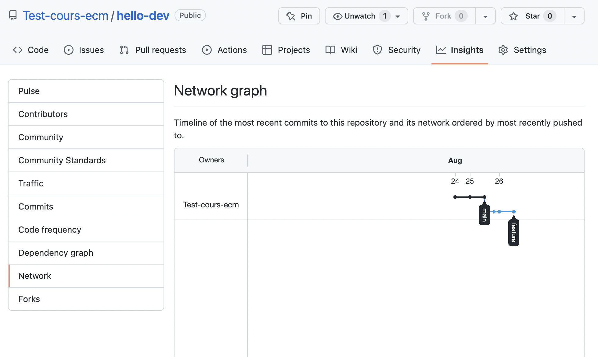
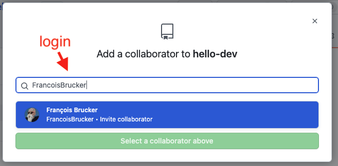
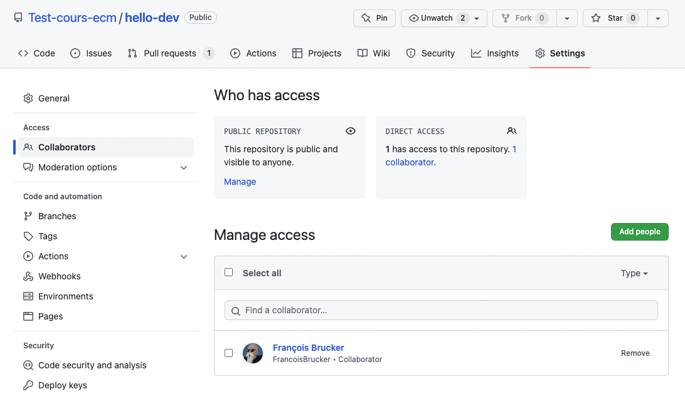

Projet github
Création et maintient d'un projet avec Github.
On en profitera pour voir le fonctionnement basique de git :
- commit
- branches
- merge
Créer un projet


Résultat : 
Les commit sont les mises à jour du projet.
Chaque commit est associé à une branche (ici main) et est obligatoirement constitué de :
- du nom de la personne qui a effectué le commit, ici
Test-cours-ecm - du numéro du commit, ici
da919d7(donné automatiquement) - d'un message (d'une ligne) décrivant le commit, ici
initial commit
Faire des commits
Ajout de fichiers


On a utilisé https://gitmoji.dev/ pour le commit. Mettre un émoji en premier caractère du message permet de facilement identifier le but du commit.
Notre projet a maintenant 2 commits. En cliquant sur le texte 32 commits", on voit l'historique de notre projet sur la branche principale (main) :

En cliquant sur le numéro de commit, on voit le détail de celui-ci :

Nous rentrerons plus en détails de ce tout cci signifie un peut plus tard. Mais La façon dont est représenté le commit suit la syntaxe des GNU diffutils. Pour nous :
- on a modifié le fichier
programme.txt @@ -0,0 +1, 6 @@: on a supprimé aucune ligne et on a ajouté les lignes 1 à 6.- à droite on voit les lignes ajoutées en vert avec un
+devant elles
Modifier un fichier
Nous allons maintenant modifier le fichier readme.md qui est aussi un fichier texte écrit au format Markdown. POur que ce fichier soit agréable à la lecture, github le compile en html, mais — en vrai — c'est juste du texte.


Notre nouveau commit :
- Notre fichier modifié est maintenant

- Son historique montre qu'il a été modifié par 2 commit

- Le dernier commit a modifié son contenu

Changer de branche
Je suis content de mon projet, mais soit :
- j'aimerai tester des modifications sans être sûr de les conserver
- j'aimerai corriger un bug mais sa correction risque de prendre un peu de temps
De plus, je ne voudrai pas juste travailler dans mon coin et tout commiter une fois que ce sera fini car :
- le travail risque de prendre du temps et plusieurs commits
- si je travaille dans mon coin, lorsque j'aurai fini, les autres membres du projets auront certainement modifié le code.
La solution à ce problème consiste à ajouter une branche au projet.
Création d'une nouvelle branche

- On clique :
- pour ajouter une nouvelle branche :

- on indique son nom et la branche à copier :

- pour ajouter une nouvelle branche :
- On peut maintenant changer de branche :
- on retourne à la page de gestion de projet et on voit qu'on a 2 branches :

- passage sur une autre branche :

- on retourne à la page de gestion de projet et on voit qu'on a 2 branches :
Travail sur la nouvelle branche
- ajout d'un fichier :

- modification d'un fichier :

On obtient alors les commits sur la branches feature :

Les 3 premiers commits sont communs à la branche main (allez dans "insights/network" pour voir le graphe de dépendances) :

Pour bien voir que les branches sont indépendantes, ajoutons un commit sur la branche main, en modifiant le fichier programme.txt :

Le graphe de dépendance à maintenant deux histoires qui divergent :

Fusion de branches
Notre feature est terminée, nous voulons ajouter ses modifications dans la banche main. Ceci n'est pas possible directement car il y a également eu des modifications dans la branche main.
Il faut amener les modifications de la branche feature dans la branche main sans tout casser. Git permet de faire ceci avec deux opérations :
- merge
- rebase
merge
La situation actuelle est celle-ci :
main : A -> B -> C -> F
\
feature : -> D -> E
Et nous voulons arriver à ceci :
main : A -> B -> C -> F ---------> G
\ /
feature : -> D -> E
Il faut fusionner (merge) la branche feature dans la branche main puis supprimer feature car elle n'est plus utile.
Pour cela :
- on va créer une
pull request:
- ce qu'on veut :

- ce n'est pas possible de faire ça automatiquement car il y a des mélanges de lignes :
 L'ajout de fichier s'est passé sans problème en revanche, git le fait tout seul.
L'ajout de fichier s'est passé sans problème en revanche, git le fait tout seul. - On clique sur
create pull requestpour créer la requête :
- En cliquant sur la requête, on voit qu'elle ne peut être résolue automatiquement :

- Qui sont dans le fichier
programme.txt:
- Chaque conflit (il peut y en avoir plusieurs par fichier) est toujours représenté comme ça :
<<<<<< [nom d'une branche ou d'un commit]
[contenu de la branche]
====== autre branche
[contenu de l'autre branche]
>>>>>> [nom de l'autre branche ou de l'autre commit]
Résoudre un confit consiste à choisir une branche ou à faire un mélange des branches pour arriver à un texte sans les <<<<<<, >>>>>> et =====. Puis cliquez sur `mark as resolved Pour notre problème : 
Une fois la fusion exécutée, notre graphe de dépendance est :

On peut alors supprimer la branche feature qui ne nous est plus d'aucune utilisée. On ne peut donc plus faire de commits sur cette branche, mais son existence est conservée dans l'historique :

annuler un commit
L'opération revert permet de revenir en arrière et d'annuler un commit ou un "pull request" (le commit fautif n'est pas supprimé).
Supprimer un commit n'est pas une opération recommandée lorsque des collaborateur ont pu avoir accès à celui-ci. Cela les désynchroniseraient. On préfère faire un commit revert qui crée un commit qui revient en arrière : on ne supprime pas le commit fautif, on l'annule en refaisant le contraire de ce qu'il a fait. Ceci assure que les utilisateurs restent synchronisés.
Nous allons ici annuler notre pull request :


Nous venons de créer une pull request pour supprimer une pull request. On peut maintenant la résoudre :

Et on se retrouve comme avant le merge, avec un graphe de dépendance encore un peu plus compliqué :

Git se débrouille tout seul
Ajouter des collaborateurs au projet
C'est très facile :

- 
- sur le compte invité, on peut accepter l'invitation :

- de retour dans l'interface du projet, on voit les collaborateurs : 
Toutes les personnes peuvent maintenant ajouter et modifier des fichiers